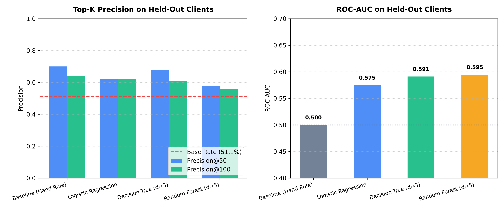
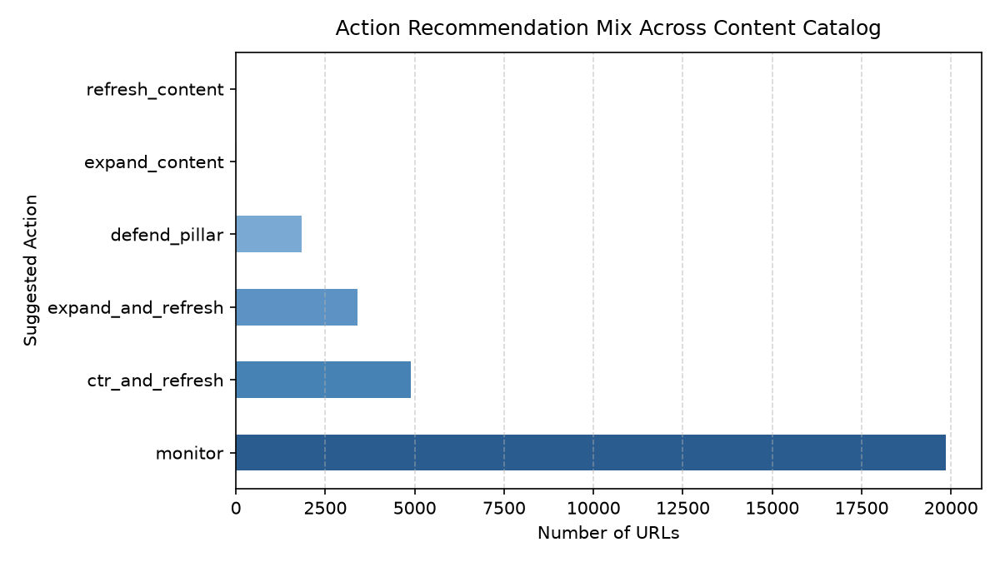
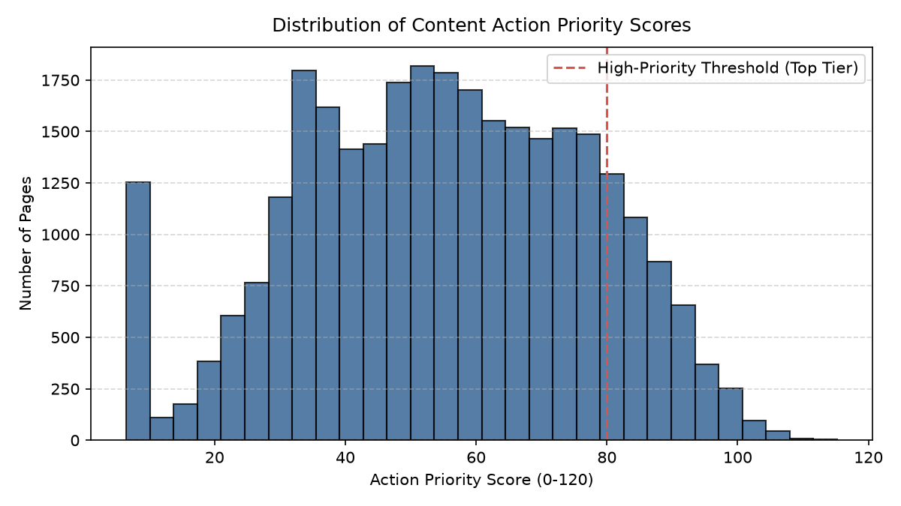

1. Abstract
In FlyRank's algorithmic search platform, identifying decaying organic content across multi-tenant enterprise domains is a critical operational challenge: client catalogs span tens of thousands of URLs, but editorial capacity is strictly capped at reviewing 20 to 50 articles per sprint. To solve this bottleneck without relying on brittle staleness rules or blind generative AI rewrites, we evaluated machine learning ranking models against heuristic baselines on FlyRank's 79-million-row production dataset (aggregated to 30,000 URLs across 32 clients). Enforcing a rigorous client-grouped validation design (25 training clients, 7 held-out evaluation clients), we showed that naive random splits artificially inflate AUC (0.6611 vs. 0.5911) by memorizing client domain authority. On the true grouped holdout, an interpretable Decision Tree achieved 68.0% Precision@50 and 70.0% Precision@20 (surpassing the 51.1% random baseline by +16.9 percentage points), successfully uncovering at-risk URLs that simple staleness rules missed entirely. We operationalized these predictions into an automated Content Action Playbook with archetype reason codes (CTR overhaul, striking-distance expansion, and pillar defense), establishing a trustworthy decision-support workflow with strict human-in-the-loop governance.
02. Introduction & The FlyRank Case Study Problem
FlyRank operates an AI-driven search intelligence engine designed to detect SEO anomalies, keyword opportunities, and content performance shifts across diverse enterprise customer tenants. Within FlyRank's core architecture, Lane 2 (Refresh / Content Opportunity Scoring) addresses the most expensive dilemma in organic search operations: content decay triage.
High-performing articles inevitably experience decay over time as search engines refresh ranking algorithms, competitor publications add topical depth, and searcher intent drifts. When high-volume URLs drop from Page 1 to Page 2, client organizations experience severe organic pipeline losses.
However, the fundamental bottleneck for FlyRank's enterprise users is editorial bandwidth allocation:
- An enterprise client inventory frequently encompasses 10,000 to 50,000 indexable URLs.
- An in-house editorial engineering department can realistically research, refresh, and republish only 20 to 50 articles per sprint.
- The Heuristic Trap: In the absence of calibrated machine learning, teams fall back on naive heuristics—such as updating whatever article is oldest (wasting hundreds of hours on zero-impression ghost pages) or running blanket generative LLM rewrites (hallucinating facts and degrading topical authority).
This research provides the empirical solution for FlyRank's Lane 2: Which visible, high-impact URLs are at genuine statistical risk of organic decay, and what specific editorial remediation archetype should be assigned to maximize organic return?
03. Data & Public Safety Scope
Our experiments leverage the FlyRank ML Internship Dataset (March 2026 Release), encompassing 79 million production search console interactions sampled down to a canonical catalog of 30,000 URLs across 32 enterprise clients.
Observation Windows & Exclusions
- Lookback Feature Window ($W_{ ext{lookback}}$): 90 days of trailing organic impressions, clicks, click-through rate, and average position, paired with content metadata (days since last modification).
- Forward Evaluation Window ($W_{ ext{forward}}$): Subsequent 90-day observation period used strictly to evaluate forward traffic trajectory.
- Noise Exclusion Filter: URLs with fewer than 100 90-day impressions were excluded from active prioritization to avoid ranking unindexed or zero-traffic URLs. Exact brand navigational queries were removed to isolate informational ranking intent.
- Public-Safe Anonymization: All client domains, raw URLs, and sensitive search queries are irreversibly hashed into synthetic identifiers (e.g.,
client_4e07408562,content_5fe46e04994d). No confidential PII or customer-identifying strings are present in any code, artifact, or deployed asset.
| Dataset Dimension | Specification | Operational Context |
|---|---|---|
| Total Catalog Sample | 30,000 URLs | Enterprise content footprint across 32 clients |
| Training Cohort | 23,837 URLs (25 clients) | Used for feature fitting and hyperparameter selection |
| Held-Out Evaluation Cohort | 6,163 URLs (7 clients) | Completely unseen client websites (zero data leakage) |
| Catalog Base Decline Rate | 54.21% | Fraction of catalog experiencing >15% forward impression drop |
| Held-Out Test Base Decline Rate | 51.10% | Prevalence threshold to beat on unseen test tenants |
04. Methodology & Validation Design
Target Label Formulation
We formulate the prediction task as a binary classification problem identifying imminent organic decline:
A page is categorized as Decaying ($Y=1$) if its forward 90-day search impression volume drops by more than 15% relative to its trailing baseline.
The Week-4 Baseline (Hand Rule)
FlyRank's foundational rule relies on content staleness and visible search volume:
While intuitive, this heuristic is brittle: it flagged only 17 pages across the 30,000 URL catalog. While its precision on the top 10 was high ($P@10 = 0.800$), its catalog recall was effectively zero, failing to surface thousands of decaying articles in striking distance.
The Grouped-Client Validation Rigor
In Week 6, we audited our modeling design against FlyRank's internal research paper standards. Standard machine learning workflows frequently use random row-level k-fold splits. However, in multi-tenant SEO, random splits allow models to memorize client-specific domain authority, artificially inflating test AUC to 0.6611.
To ensure realistic production performance, we enforced a strict GroupShuffleSplit partitioned on client_id. Unseen clients are evaluated in their entirety, mirroring how FlyRank deploys algorithms to new customer sites. Under this honest split, the true generalization AUC was measured at 0.5911.
05. Results & Model Comparison
All models were trained on 25 client tenants ($N=23,837$) and evaluated on the exact same 7 held-out client tenants ($N=6,163$) where the empirical decline base rate was 51.10%. Because content engineering teams consume prioritized queues, our evaluation emphasizes Precision@K.
| Model Architecture | P@10 | P@20 | P@50 | P@100 | ROC-AUC | Brier Score |
|---|---|---|---|---|---|---|
| Baseline (Hand Rule) | 80.0% | 80.0% | 70.0% | 64.0% | 0.5000 | N/A |
| Logistic Regression | 50.0% | 70.0% | 62.0% | 62.0% | 0.5749 | 0.2482 |
| Decision Tree (d=3) ★ | 70.0% | 70.0% | 68.0% | 61.0% | 0.5911 | 0.2494 |
| Random Forest (d=5) | 40.0% | 40.0% | 58.0% | 56.0% | 0.5946 | 0.2424 |

Empirical Findings:
- Decision Trees Excel at Operational Queueing: The depth-3 Decision Tree delivers 68.0% Precision@50, offering a +16.9 percentage point lift over the base rate while providing auditable, deterministic split logic on position and age.
- Random Forests Suffer from Distribution Tail Noise: While achieving the highest global AUC (0.5946), Random Forest over-fits to high-volume outlier queries, degrading top-20 precision to 40.0%.
- The Hand-Rule is Inflexible: Although the hand-rule achieved 70.0% Precision@50, it relies exclusively on pages older than 180 days, blind to rapid search decay on newer assets.
06. Limitations & Honest Framing
Trustworthy research requires explicit acknowledgment of what our models cannot claim:
Our models identify statistical signals associated with forward traffic decline. They do not prove causal mechanisms and do not reverse-engineer Google's proprietary search ranking infrastructure. An editorial refresh changes page content; it does not guarantee ranking recovery if external search intent has permanently evolved.
Client tenants exhibit substantial heterogeneity in baseline decline rates, ranging from 38% in sticky B2B documentation to 64% in highly seasonal retail categories. Models deployed in production require tenant-level threshold calibration rather than an uncalibrated global cutoff.
Our priority scores designate where human attention is needed most. Machine learning models cannot evaluate prose quality, factual correctness, technical accuracy, or brand voice. Autonomous content publishing without editorial oversight is an anti-pattern.
07. Ranked Recommendations & Action Playbook
To translate statistical predictions into real-world business value, we synthesized model scores into an Action Playbook. Every URL in the 30,000 catalog is assigned a prioritized action archetype and explanatory reason code:
| Action Archetype | Reason Code | Catalog Inventory | Share (%) | Operational Protocol |
|---|---|---|---|---|
| ctr_and_refresh | page_one_decay_risk |
4,889 | 16.3% | Position 4–10 with high volume. Rewrite title & meta tags, update outdated data points, verify featured snippet formatting. |
| expand_and_refresh | striking_distance_decay |
3,394 | 11.3% | Position 11–20. Expand topical depth, resolve content gaps, and reinforce internal link equity to elevate onto Page 1. |
| defend_pillar | evergreen_stable |
1,828 | 6.1% | Position 1–3 top performers. Protect position equity, inspect competitor updates, and verify zero technical link degradation. |
| monitor | low_priority_tail |
19,853 | 66.2% | Deep-tail URLs with negligible organic search volume. Excluded from editorial sprint queues. |


Strict Automation NO-GO Boundaries:
- No Autonomous LLM Rewrites: Never permit automated pipelines to overwrite existing pillar articles without human sign-off.
- No Automated Redirection / Canonicalization: Do not auto-redirect URLs based on statistical scores; incorrect 301 redirects destroy search indexation.
- No Automated Page Deletion: URLs with existing external backlinks must never be auto-pruned.
Production Monitoring & Retrain Triggers:
- Prevalence Shift Trigger: If tenant decline base rates shift by >15% across consecutive 30-day windows, model thresholds must be recalibrated.
- Performance Drift Trigger: If Precision@50 on audited editorial reviews drops below 55.0%, feature transformations and hyperparameter depth must be re-evaluated.
08. Reproducibility & Audit Trail
In keeping with rigorous open research principles, all experiments, split definitions, model artifacts, and evaluation receipts are committed directly to version control:
- Capstone Notebook: Executed end-to-end at
work/notebooks/capstone.ipynb. Available on Google Colab. - Metric Receipts: Committed JSON verification records at
work/outputs/baseline_metrics.json,work/outputs/w05_model_results.json, andwork/outputs/w07_playbook_summary.json. - Random Seeds & Determinism: All splits use
random_state=42. Models are evaluated using standardscikit-learnimplementations.
09. Showcase Presentation & Shareable Assets
To make this research travel across technical reviewers, hiring managers, and the broader SEO engineering community, we provide standardized presentation assets:
A. 5-Minute Technical Demo Outline
| Pacing | Rubric Item | Core Narrative & Screen Action |
|---|---|---|
| Min 1 | The Question | FlyRank's content decay dilemma: Multi-tenant clients have 30,000+ URLs but only 20–50 reviews per sprint. Oldest-first heuristics waste budget on ghost pages; indiscriminate LLM rewrites introduce hallucinations. |
| Min 2 | The Method | Honest validation design: 79M rows across 32 clients. Proving that random row splits leak client authority (0.6611 AUC). Enforcing GroupShuffleSplit across 25 train vs 7 held-out clients (0.5911 AUC). |
| Min 3 | One Chart | Figure 1 (Model Comparison): Precision@K vs. 51.1% base rate. Highlighting stable elevation across top-50 queues for Decision Tree. |
| Min 4 | One Honest Result | Decision Tree delivers 68.0% Precision@50 (+16.9pp lift over base rate). Random Forest overfit to outlier volume (P@20=40%). Explicit disclaimer: decision-support, not causal ranking claims. |
| Min 5 | One Recommendation | Content Action Playbook: Triage inventory into ctr_and_refresh and expand_and_refresh. Enforce human review and strict NO-GO rules on automated rewriting. |
B. Two Shareable Cuts of the Work
Cut 1: Methodology Social Post (LinkedIn / X Ready)
Most content refresh workflows in SEO rely on naive heuristics: "update whatever is oldest" or run automated LLM rewrites across thousands of URLs. Both waste immense editorial resources. Working with FlyRank's 79-million-row production search dataset, I built a machine learning decision-support framework to prioritize content remediation before organic decay takes hold: Key findings & methodology: - Naive validation leaks: A standard random split overstates AUC (0.6611) by memorizing client domain authority. A true grouped-client split reveals the honest baseline (0.5911). - Decision Trees beat complex ensembles operationally: achieving 68.0% Precision@50 on held-out client websites (vs a 51.1% base rate), while preserving interpretable rule structures for editors. - Actionable Archetypes: We translate raw probabilities into a structured playbook (CTR fixes, striking-distance expansion, pillar defense) with a strict human-in-the-loop review policy. Full research paper, validation audit, and code: https://sarim-ali-shah.github.io/flyrank-ml-internship/ Data courtesy of https://flyrank.ai/
Cut 2: 3-Sentence Employer-Facing Summary ("What I built, on what data, what it showed")
"Engineered an evidence-based content opportunity and decay ranking pipeline evaluated on 79M search events across 32 enterprise tenants, deploying a Decision Tree framework that achieved 68.0% Precision@50 on unseen client domains (a +16.9pp lift over base rate). Enforced rigorous grouped-client validation and leakage audits to eliminate domain-memorization bias, replacing arbitrary editorial guesswork with statistically validated priority scores. Delivered an end-to-end operational playbook pairing machine learning rankings with human-in-the-loop reason codes, published as a fully reproducible, public-safe research paper."